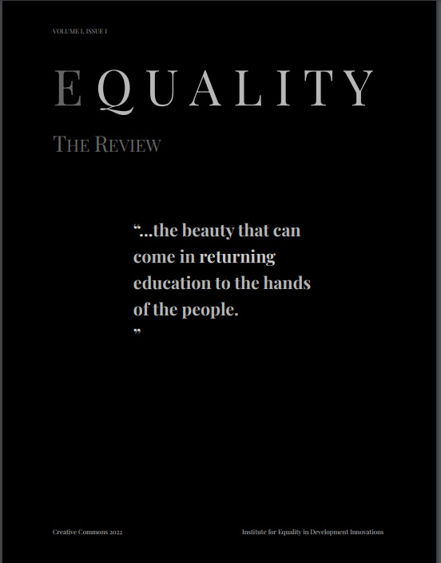

Aims and scope
Equality: The Review aims to highlight perspectives on health and/or social disadvantage.
We specifically want to invite researchers, practitioners, and students with lived experience of health and/or social disadvantage themselves - as we believe lived experience is valid knowledge.
Instruction for Authors
Stream 1: Research. These papers must include an abstract, divided into five sections: background, methods & ethics, results, discussion, and conclusion.
Stream 2: Humanities & Academic Essays. These papers must include an abstract, but do not necessarily need to follow pre-determined structure.
The recommended length is 250 for abstract; 2000~3000 words for full article. Plain language is preferred, in support of equal access to information.
Citations and Style Guide
Equity: The Review follows the MLA format of citations, including in-text citations.
APCs and Fees
There are no fees to the author throughout the publishing process.
Copyright & Licensing
Equality: The Review adheres to open-access
guidelines to support our mission of equality in access to information and education.
By submitting, authors agree to the Creative Commons license. If you have questions about the Creative Commons license, you may refer to existing
publishing initiatives such as DOAJ: Directory of Open Access Journals.
Manuscript Submission
Submission is completed by email including all of the following information:
The affiliation and contact information of authors/co-authors
Abstract (~250 words) must be directly included in the email body
The initial manuscript should be submitted as an attached .doc and .docx with minimal formatting, or, directly attached in the email body
If you choose to submit a PDF to better organize tables, diagrams and/or figures, please note that the editors will eventually request a text version to format according
to the guidelines of our journal for consistency.
Optional:
The names and contact information of any reviewers you consider suitable may be included
Author biography is optional, but recommended, and helps the editorial team
ensure diversity in the voices and opinions represented
Tables, diagrams, and figures may be included; please ensure consistency in style
Inquiries and Submissions Contact:
Kang Ong
Editor
Submission Contact:
equality@i-edi.org
Review Process
Initial Review: The submission is first assessed for completeness of information and quality of manuscript. Authors will be contacted if there are any omissions,
and can choose to amend their submission at this stage. Once this stage is complete, the article itself is separated from author names and affiliations, and proceeds to
Editorial Review.
Editorial Review: The manuscript is sent to no less than 2 reviewers to assess academic rigor. The review committee will include the author's recommended reviewer as priority, unless
1) the recommended reviewer cannot be contacted or 2) the recommended reviewer declines or proposes a review deadline beyond 30 days.
Revisions: All comments from the peer-review process are then collected, and sent to the author. Authors can then choose to withdraw the submission, or proceed
to the revising process to meet all concerns from editorial comments. The author(s) may submit the manuscript with comments to the editors.
2nd Editorial Review: The revised manuscript is assessed. If authors fail to address editorial comments, the editorial team may choose to decline publication, or,
contact authors for further revisions. If the manuscript passes this stage of the review process, it proceeds to copyediting.
Copyediting: After revisions, the manuscript may contain new typing errors or formatting alterations. Authors should ensure a clean, copy-edited version that is suited for
permanent publication.
Final details: Upon receiving a clean, copy-edited manuscript, the editorial team will proceed to formatting, and may
contact authors for the following three items: 1) Title confirmation; 2) Wiki entry; and 3) Citation prior to final publication.
Editorial Board
常三强 - Affiliation: 傈僳联合社区开发会
吴宽和 - Affiliation: 傈僳联合社区开发会
回祁 - Affiliation: 傈僳联合社区开发会
赵平 - Affiliation: 傈僳联合社区开发会
Neuman, Sarah - Affiliation: Institute for Equality in Development Innovations
林武达 - Affiliation: 傈僳联合社区开发会